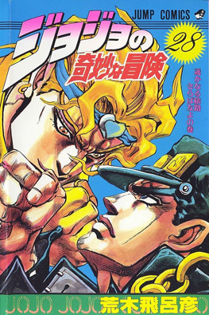
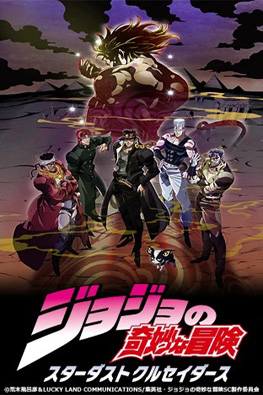

Opening
Stand Proud
Portada
Manga
anime
Historia del manga/anime
JoJo’s Bizarre Adventure Parte 3, titulada Stardust Crusaders, se publicó como manga entre 1989 y 1992. La historia sigue a Jotaro Kujo, un joven japonés que descubre que posee un poder llamado Stand, una manifestación de su espíritu de lucha con habilidades únicas. Jotaro, junto a su abuelo Joseph Joestar y otros aliados, emprende un viaje desde Japón hasta Egipto para enfrentar a DIO, un antiguo vampiro que ha despertado y cuya maldición amenaza a la familia Joestar. Cada parada del viaje presenta enemigos con Stands únicos, lo que convierte la historia en un recorrido lleno de combates estratégicos y creativos.
El anime de Stardust Crusaders se emitió entre 2009 y 2013, con un total de 48 episodios divididos en dos partes: la primera, Stardust Crusaders, y la segunda, Battle in Egypt, que adapta la confrontación final con DIO. Un dato curioso de esta parte es que los Stands de los enemigos están inspirados en músicos, bandas y conceptos del tarot, lo que hace que los combates sean no solo de fuerza, sino también de ingenio y estrategia. Por ejemplo, el Stand Killer Queen hace referencia a la banda Queen, mientras que otros Stands como Silver Chariot toman inspiración visual de caballeros clásicos, combinando música, historia y creatividad en cada enfrentamiento.